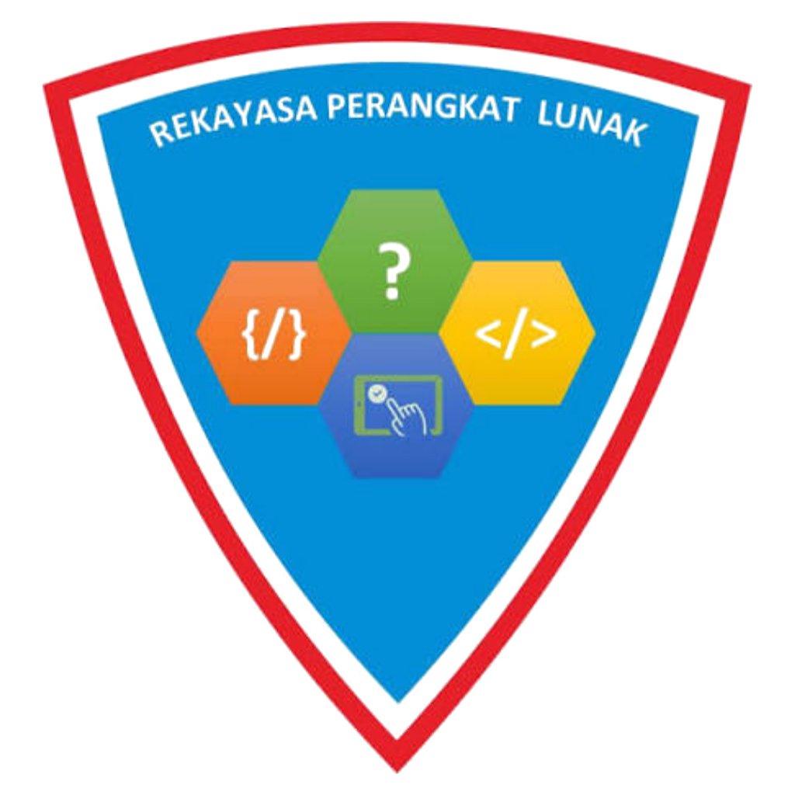
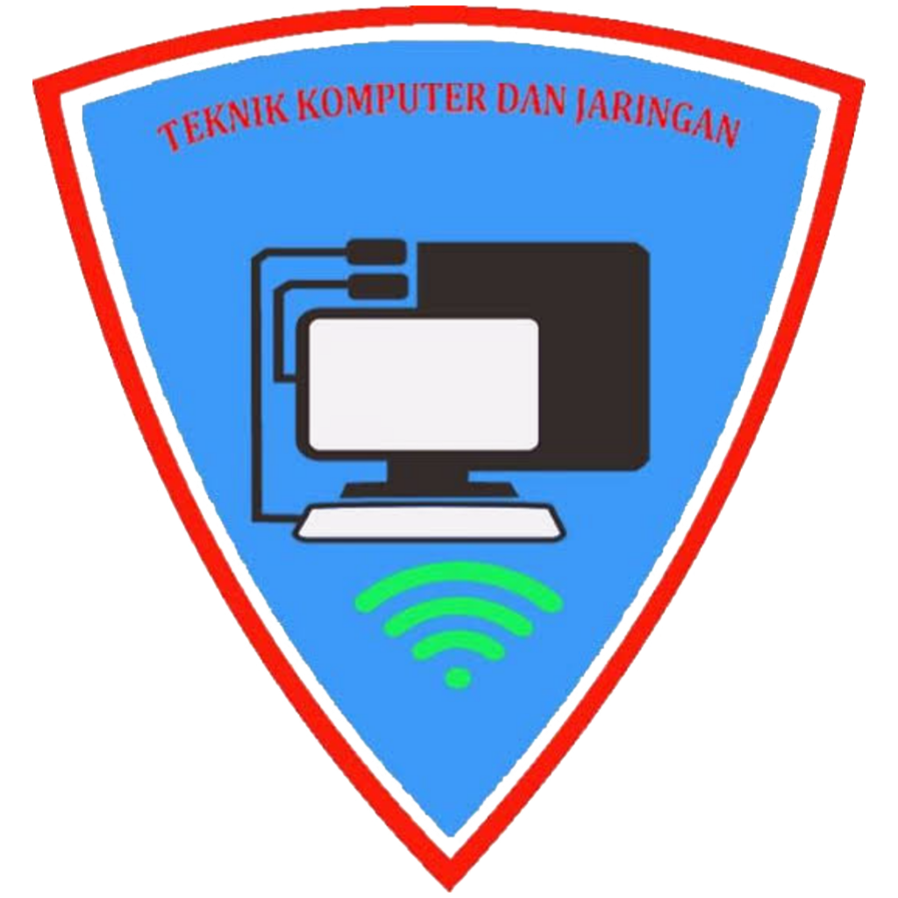

JL. PATRIOT NO. 20 A MEDAN, Kec. Medan Sunggal, Kota Medan, Prov. Sumatera Utara
Rekayasa Perangkat Lunak (RPL) adalah salah satu jurusan unggulan di SMK Negri 9 Medan.
Berfokus pada penguasaan kemampuan software engineering yang akan sangat berguna di dunia kerja terutama di era teknologi yang semakin pesat.

Teknik Komputer dan Jaringan berfokus pada penguasaan kemampuan hardware engineering dan juga jaringan.

Desain Komunikasi Visual (DKV) berfokus pada pengembangan kemampuan kreatif dan terampil dalam mendesain karya digital.
Produksi dan Siaran Program televisi (PSPT) berfokus pada kemampuan public speaking di depan layar serta kemapuan dalam memproduksi content digital.
Sesuai namanya, jurusan ini berfokus pada keterampilan serta keahlian dalam memproduksi content animasi baik 2D maupun 3D.
Pekerja Sosial (Social Care) berfokus pada pengembangan kemampuan dalam pelayanan masyarakat serta dasar dasar kesehatan.